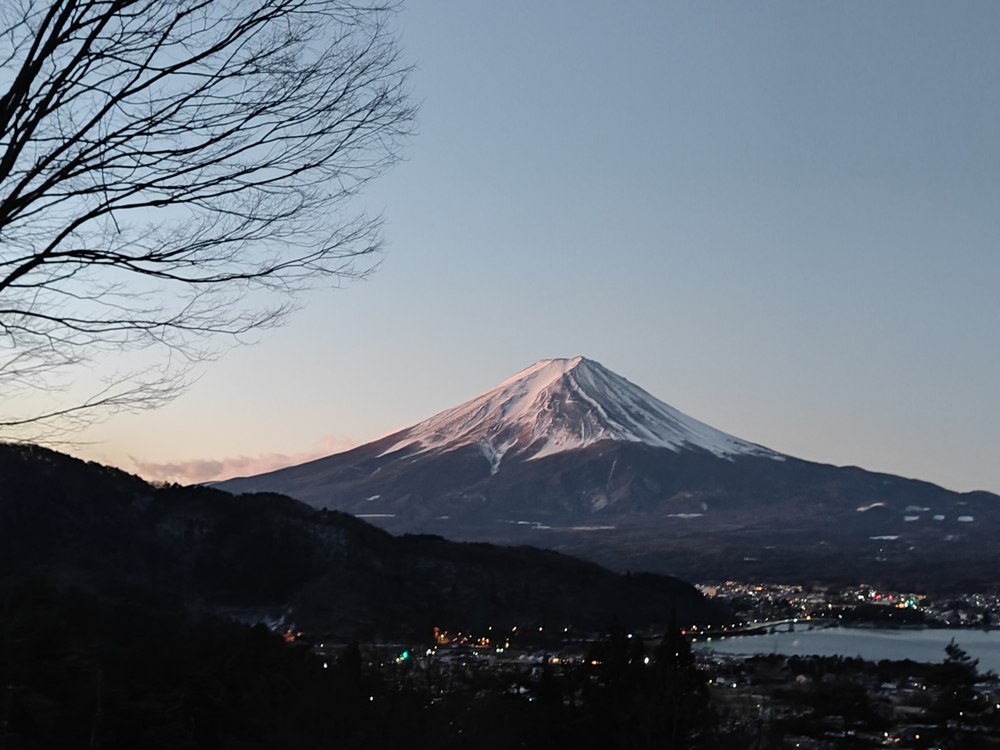
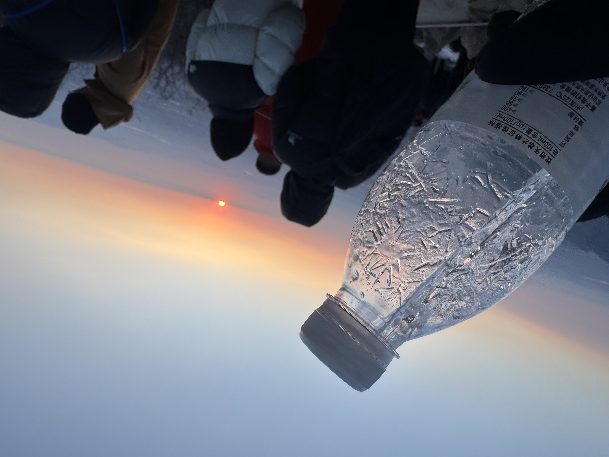
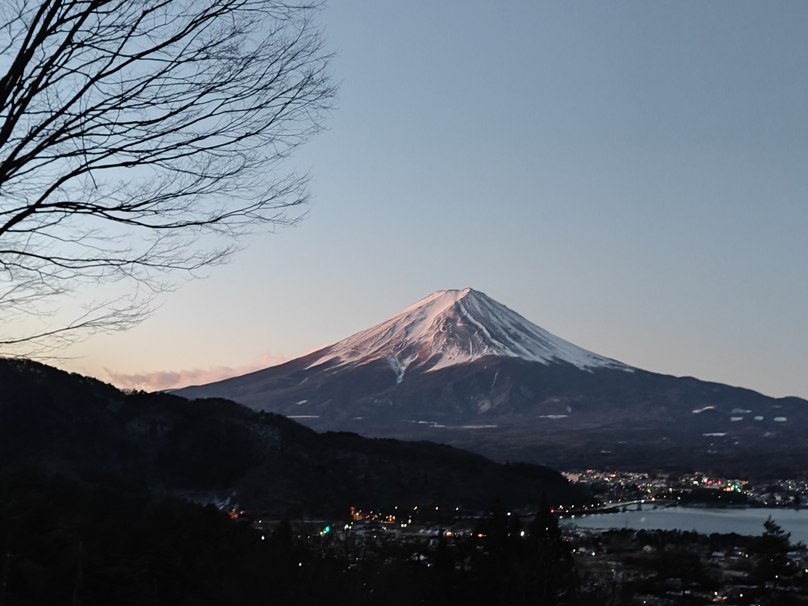
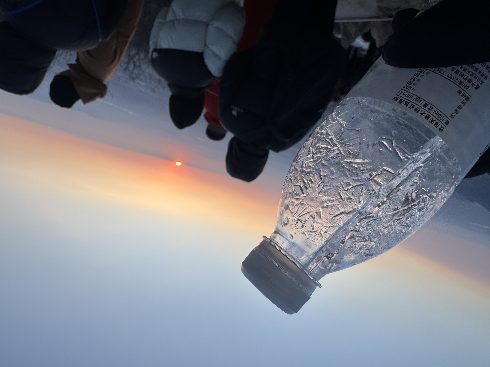

Chaoyi Huang (PiaoZY)

👋 Hi! I'm Chaoyi Huang(黄超逸), a second-year undergraduate student at ACM Honors Class of Shanghai Jiao Tong University, advised by Prof. Yong Yu.
🌱 I'm currently learning about operating system, machine learning, large language model, and computer vision. I'm also interested in robots (since I was a child).
📫 You can reach me by xhsystem@sjtu.edu.cn.
🤓 Pronouns: He/him.
More about me
🏃 I'm a fan of many kinds of sports, like 🏀basketball, 🏸badminton, ⚾baseball, 🎾tennis, 🧗climbing, and 🤺swordplay. Maybe I'm not that professional, but I can get familiar to a new sport very quickly.
🚗 I'm also a fan of driving and racing cars, especially WRC.
🎧 ♪d(´▽｀)b
🧑🍳 I believe I have a talent for cooking, and I'm working hard to extend recipes.
📷 I love traveling all over the world, and catch the most splendid scenery. Here are some photos that I'm proud of:
 


